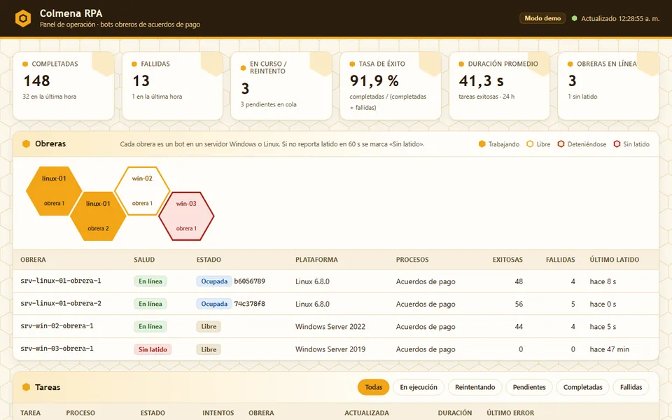

Automatización · Mensajería · Fiabilidad
Colmena RPA
Bots obreros que registran acuerdos de pago en un portal de cartera. Tareas por RabbitMQ con reintentos escalonados y cola de mensajes muertos (DLQ), errores de negocio separados de los de sistema, idempotencia y trazabilidad completa en PostgreSQL. Se despliega como servicio en Linux (systemd) y Windows Server (NSSM).
- Python
- RabbitMQ
- PostgreSQL
- Playwright
- FastAPI
- Docker